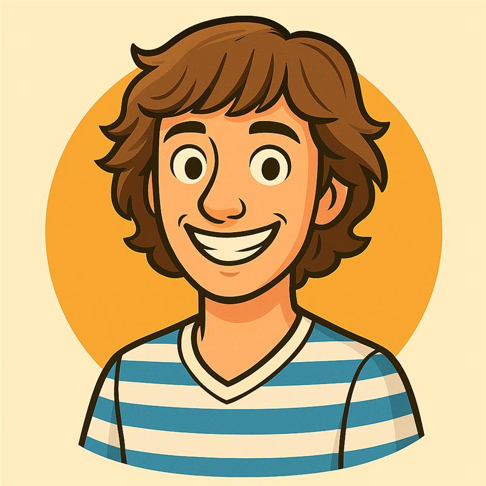

Wat is O&O op Schaersvoorde?
Binnen het Technasium volg je het vak Onderzoek & Ontwerpen (O&O). Je werkt aan echte opdrachten van echte bedrijven.
Loopbaanoriëntatie
Kijkje in de keuken bij technische bedrijven.
Competenties
Leren samenwerken en creatief problemen oplossen.
Techniek
Werken met 3D-printers en lasersnijders.
De Onderbouw: De Basis
In de eerste drie jaar focus je volledig op O&O. Geen saaie toetsen, maar vette presentaties aan de opdrachtgever!
Klas 4: Het Keuzejaar
In klas 4 krijg je een combinatie: O&O én NLT. Aan het einde van het jaar kies jij je pad.
O&O
Rond af met de Meesterproef in de bovenbouw.
NLT
Wetenschappelijke modules die meetellen voor je examen.
Bovenbouwervaringen
– Aimée Hoftijzer, VWO 6
– Leerling VWO 5
Projecten Showcase
Duurzame Kantine
Ontwerp een systeem voor Schaersvoorde.
Smart Living
Ontwerp een huis vol slimme sensoren.
De Meesterproef
Jouw eigen meesterwerk in het laatste jaar.
AI Tools & Handleiding
Deze website is gemaakt met behulp van AI. Gebruik deze tools ook voor jouw projecten:
Het O&O Team
De docenten die jullie begeleiden bij het ontwerpen en onderzoeken:
.png)
Timon Geurts
Techniek & Slay-begeleiding.

Chiel Grijsen
Project Master.
.jpeg)
Heleen Veerbeek
Proces Coach.
.png)
Naomi Chevaling
Research Expert.
.png)
Marije de Vries
Theorie & Praktijk.
Zou jij O&O moeten kiezen?
Klik op de knop om de check te starten!
Over Ons & Privacy
Gemaakt door: Zahra Hoftijzer, Vycho Lurvink & Malou Maas (V4) , op onze website wordt rekening gehouden met privacy wetgeving, afbeeldingen of gegevens van personen worden niet zonder toestemming gedeeld .